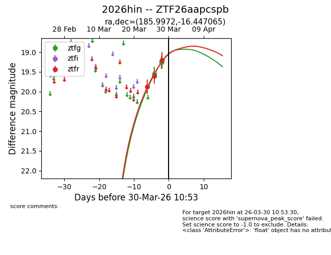
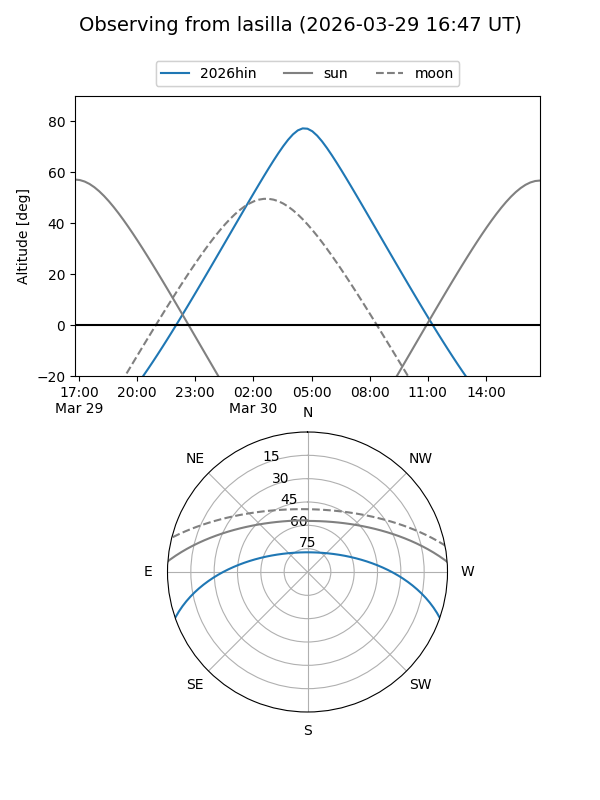
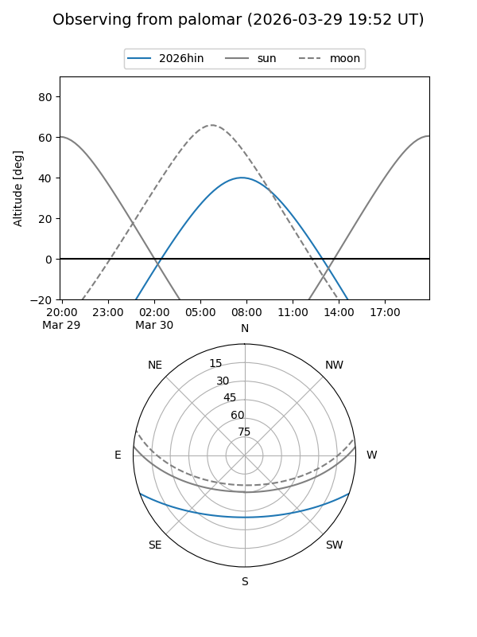
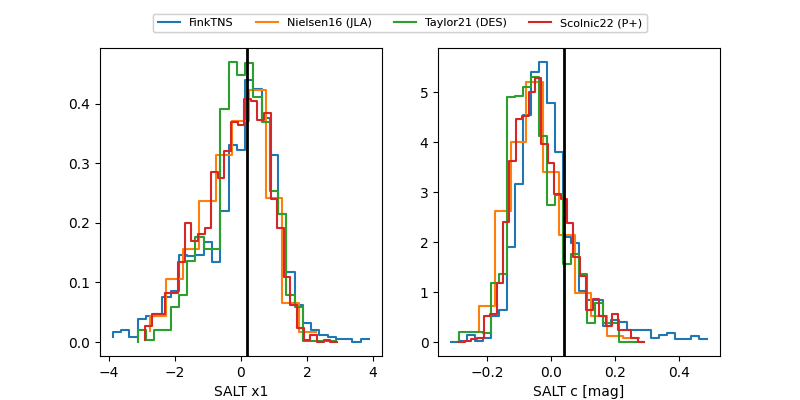

2026hin
Target 2026hin at 2026-03-30 10:56
Aliases and brokers:
FINK: link
Lasair: link
ALeRCE: link
TNS: link
YSE: link
alt names
ZTF26aapcspb (ztf,fink_ztf)
2026hin (tns,yse)
Coordinates:
equatorial (ra, dec) = 185.9972,-16.44707
equatorial (HMS+DMS) = 12:23:59.33,-16:26:49.43
galactic (l, b) = (293.4508,+45.91876)
Flags:
Photometry:
last ztfg=19.26, ztfr=19.21
2 ztfg, 3 ztfr detections
Lightcurve

Visibility


Additional plots
